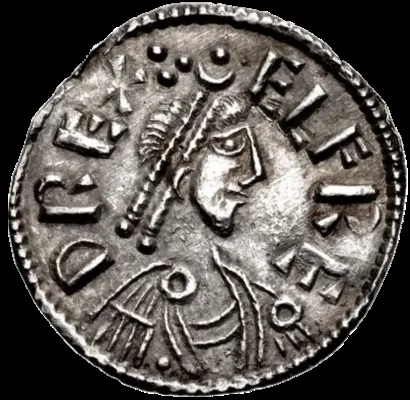

Alfred the Great
A young king hiding in the marshes rebuilds a broken kingdom — with forts, a fleet and a love of books.
England · Reigned 871–899 · Stop 1 of the odyssey
← Learning from the Past: An English Odyssey · ← Before We Begin: Saxon England · Edward the Elder →

- Have you ever had to start again after a big failure? What helped you come back?
- What makes a leader "great" — winning battles, or building things that last?
- Why might a king of 1,100 years ago care about books and schools?
The words for today's story
Each new word is hidden in a sentence. Read it aloud and say what you think the bold word means from the rest of the sentence — then reveal it and see how close you were.
Now use them — out loud
- Using any four of these words, predict: what kind of reign do you think this will be — and how might it end?
- Which words belong to power and which to danger? Sort them out loud and say why.

.png){kind=link}
Credit: CNG - Classical Numismatic Group, credited creator · via Wikimedia Commons, CC BY-SA 2.5
The story, in three parts
Read each part. After it, there's a quick comprehension check (try the questions from memory first), then one thing to discuss.
Part 1 — The king in the marshes
In 871, when he was about twenty-two, Alfred became king of Wessex, the last of the English kingdoms still standing against the Viking "Great Army". Northumbria, East Anglia and much of Mercia had already fallen. For years Alfred fought, paid, and bargained to keep the Danes out.
Then, in January 878, came disaster. The Danes had made a surprise raid on Chippenham during the Christmas season, and many of the people of Wessex submitted to them. Alfred escaped with a small band and took refuge at Athelney, an island in the Somerset marshes. A famous later legend says that he sheltered in a peasant woman's hut and let her cakes burn while he brooded — but that story first appears long after his death, so we cannot know if it is true.
1. Why was Wessex so important in 871?
2. What happened at Chippenham in 878, and where did Alfred go?
1. It was the last English kingdom still holding out against the Viking Great Army.
2. The Danes made a surprise attack at Christmas time; Alfred fled and hid at Athelney in the Somerset marshes.
- The story of the burnt cakes may not be true, yet people have told it for a thousand years. Why do you think it survived?
Part 2 — The comeback
From his marsh refuge Alfred did not give up. In May 878 he rallied the men of Somerset, Wiltshire and Hampshire, and at Edington he defeated the Danish army led by Guthrum. The Danes were besieged until they surrendered.
Alfred did something surprising with his victory. Instead of destroying his enemy, he made a truce. Guthrum agreed to be baptised as a Christian, with Alfred as his godfather, and later a treaty divided England: the Danes would rule the east, in the area that came to be called the Danelaw, and Alfred would hold the west and south.
1. Who did Alfred defeat at Edington?
2. What did Alfred do instead of destroying the Danes?
1. Guthrum and his Danish army.
2. He made peace: Guthrum was baptised with Alfred as godfather, and a treaty later split England between them.
- Was it wise to make a deal with an enemy you had just beaten, rather than finishing him off?
Part 3 — Building to last
Alfred knew the Vikings would return, so he built a defence system. He created a network of burhs — fortified towns — across Wessex, and organised his army so that half the men were on duty while the other half farmed. He also built a fleet of larger ships. When new Viking armies came in the 890s, they found Wessex far harder to break.
Alfred also believed that the kingdom had suffered because learning had collapsed. He gathered scholars at his court and had important Latin books translated into English, and he wanted the sons of free men to learn to read English. He died in 899, and he is the only English king to be called "the Great".
1. Name two ways Alfred made Wessex harder to attack.
2. Why did Alfred care about books?
1. Any two: a network of fortified burhs; a rota so half the army was always ready; a new fleet of ships.
2. He believed the decline of learning had weakened the country, so he had key Latin books translated into English and promoted reading.
- Alfred defended the kingdom with walls and with books. Which do you think matters more for a country's survival?
Grammar — Past Perfect & Sequencing
History is a chain of causes. To show that one thing happened before another in the past, English uses the past perfect.
• Past simple tells the main line: "The Danes attacked at Christmas."
• Past perfect (had + past participle) reaches further back: "By then, Alfred had already escaped into the marshes."
• Signal words: by the time, already, before, after, when, until.
1. Past simple or past perfect?
Complete each sentence about Alfred the Great. Use the word in brackets.
1. By January 878, the Danes (already / conquer) most of England.
2. Alfred (escape) to Athelney after the raid on Chippenham.
3. When he became king, Northumbria and East Anglia (fall) to the Vikings.
1. had already conquered
2. escaped
3. had fallen
2. Put the earlier event in the past perfect
1. After he (hide) in the marshes for several weeks, Alfred rallied his men.
2. Guthrum was baptised because he (lose) the battle of Edington.
3. By the time the Vikings returned in the 890s, Alfred (build) a ring of burhs.
1. had hidden
2. had lost
3. had built
Hold on to this — you'll need it in the Speak tab.
Going deeper
Alfred's story is the archetype of the comeback. What makes it more than a war story is what he did after winning: he used peace to make his kingdom resilient — defended towns, a standing rota for his army, ships, and a programme of education in the people's own language. Much of what we know comes from a biography by his friend Bishop Asser and from the Anglo-Saxon Chronicle, which was begun during his reign — so the picture is flattering, and historians read it with care.
- Alfred had his biography written by a friend. How should we treat history written by people close to its hero?
- Why might translating books into the people's own language be as powerful as building forts?
- Is it a weakness or a strength for a leader to hide and wait, rather than fight at once?

Stop 1 on the journey → tie. In the Major System Palace, 1 is spelled with the sounds t, which make tie (a red silk necktie).
Picture Alfred in the marshes, tying a red silk tie around a bundle of burnt cakes — the very first knot of the odyssey.
You don't need the system to follow the story — it's simply a hook that lets you walk the whole odyssey, king by king, in order.
Speak
This is the heart of the lesson — do all of it out loud. The timer is there to keep you going: fill the time with detail rather than escaping it.
Tell the story of Alfred the Great in your own words, as if to someone who has never heard of them. Move through the arc: the Viking invasions → the raid at Chippenham and the hiding place at Athelney → the victory at Edington and the peace with Guthrum → the burhs, the fleet and the books.
Use today's grammar at least three times, and work in at least five key words (invade, raid, refuge, rally, truce, baptised, burh, fleet, literate, legacy).
Alfred chose to make peace with Guthrum rather than destroy him. Argue for or against: "It is always better to turn a defeated enemy into a partner than to crush them." Use an example from history or your own life.
Tell a story from your own world — work, family, the news — that echoes this reign. Stuck for an idea? Pick one of these and run with it:
- A person or business that came back from near collapse.
- A time you prepared for a problem before it happened.
- A leader who invested in education or skills rather than quick wins.
- A deal between former enemies that worked — or didn't.
To finish — the bigger questions
- Alfred is the only English king called "the Great". Does he deserve it more for his victories or for his rebuilding?
- What is one "burh" you could build in your life this year?
- Before you go — from memory: give two sentences about Alfred the Great using Past Perfect and Sequencing, and say what lesson from this reign you could use this week.
← Learning from the Past: An English Odyssey · ← Before We Begin: Saxon England · Edward the Elder →